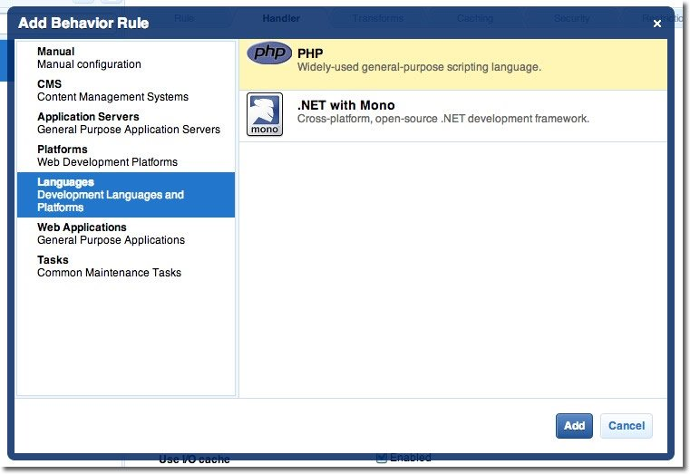
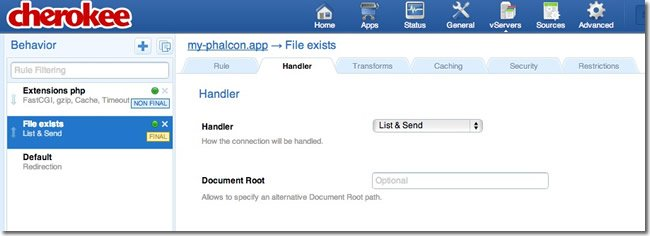

Cherokee Installation Notes¶Cherokee is a high-performance web server. It is very fast, flexible and easy to configure. Configuring Cherokee for Phalcon¶Cherokee provides a friendly graphical interface to configure almost every setting available in the web server. Start the cherokee administrator by executing with root /path-to-cherokee/sbin/cherokee-admin Create a new virtual host by clicking on ‘vServers’, then add a new virtual server: The recently added virtual server must appear at the left bar of the screen. In the ‘Behaviors’ tab you will see a set of default behaviors for this virtual server. Click the ‘Rule Management’ button. Remove those labeled as ‘Directory /cherokee_themes’ and ‘Directory /icons’: Add the ‘PHP Language’ behavior using the wizard. This behavior allow you to run PHP applications:

Normally this behavior does not require additional settings. Add another behavior, this time in the ‘Manual Configuration’ section. In ‘Rule Type’ choose ‘File Exists’, then make sure the option ‘Match any file’ is enabled: In the ‘Handler’ tab choose ‘List & Send’ as handler:

Edit the ‘Default’ behavior in order to enable the URL-rewrite engine. Change the handler to ‘Redirection’, then add the following regular expression to the engine ^(.*)$: Finally, make sure the behaviors have the following order: Execute the application in a browser: |